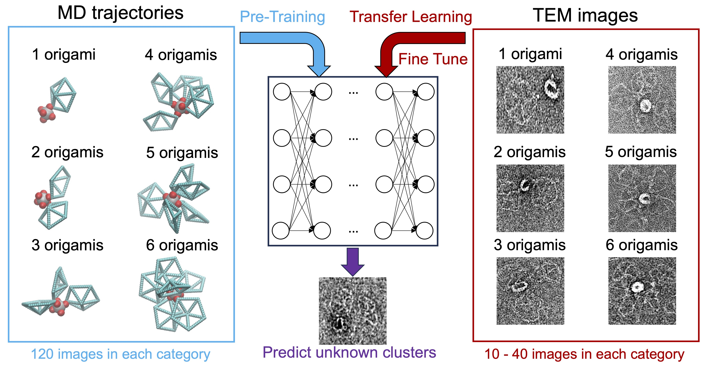
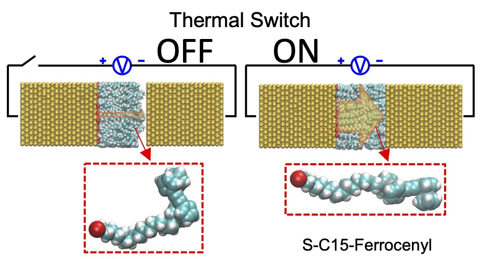
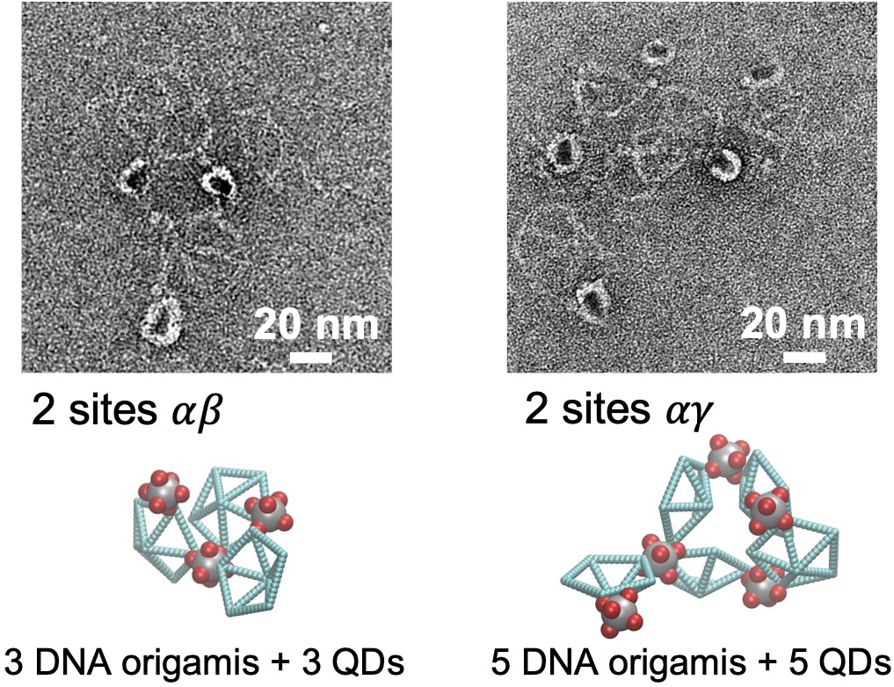
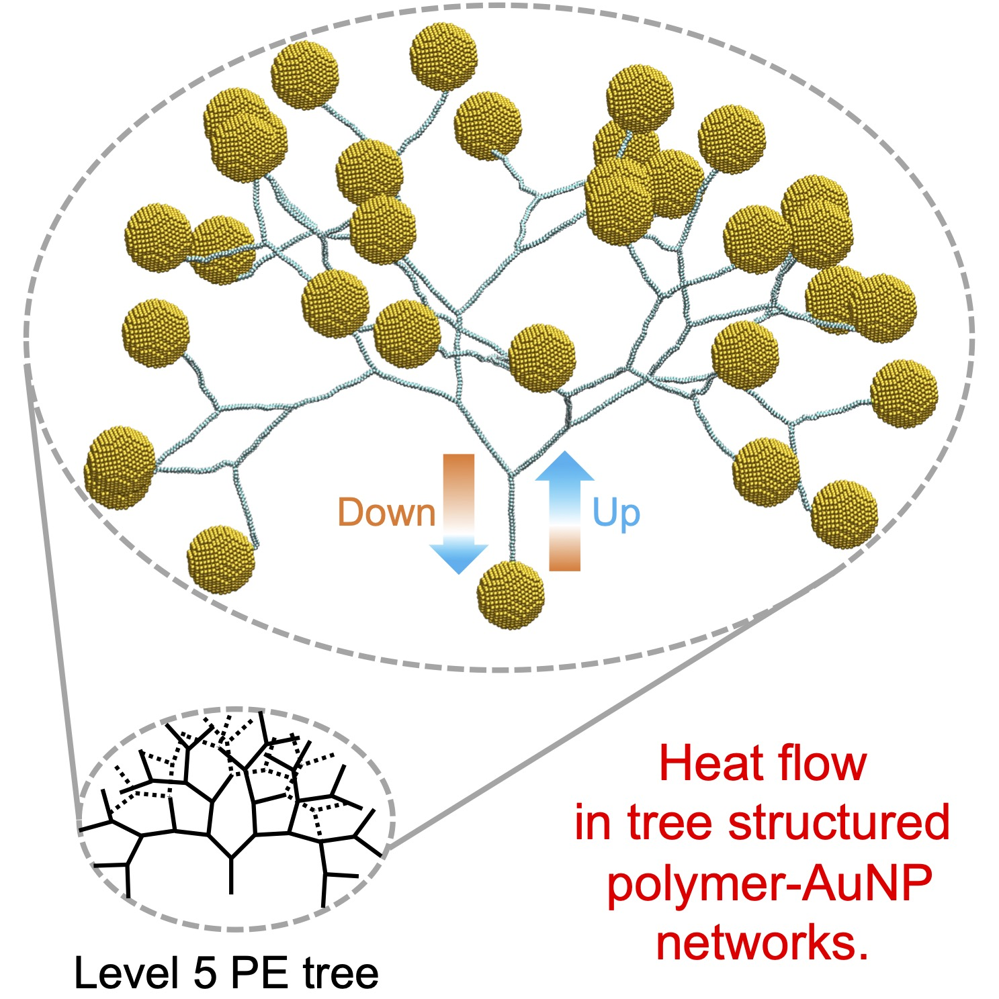

Welcome
My lab aims at using computational and theoretical methods to develop new materials for applications in energy management, mass transport, information processing, and human health. My research area includes thermodynamics, statisical mechanics, computational chemistry, AI for science, polymer, interface, biomaterial, and nanotechnology. My team will develop multi-scale simulation models, machine learning/artificial intelligence (ML/AI) models, and theoretical methods to accelerate materials design. We will use High Performance Computers (HPCs) to help experimentalists solve materal develop problems. Through rigorous computation and interdisciplinary collaboration, my lab will have a broad impact in thermal physics, materials science, computational chemistry, physical chemistry, and data science.
Research Areas of Interest
Thermodynamics

Understand energy, temperature, entropy, and phase/state transition from molecular level to macroscopic scale. Develop theoretical methods to solve thermal physics problems.
Multi-scale simulations

Develop multi-scale computational methods, including ab initio, classical molecular dynamics (MD), coarse-grain (CG), Monte Carlo (MC), and hydrodynamic models.
ML/AI models
Integrate low-fidelity and high-quantity simulation dataset with high-fidelity and low-quantity experimental dataset to train ML/AI models, then apply physical rules to improve the accuracy.
Research Publications: link
Selected papers:
- Energy: "Thermal Switching in a Ferrocenyl Nanojunction Is Observed in All-Atom Simulations." Xingfei Wei, Alexander Popov, and Rigoberto Hernandez The Journal of Physical Chemistry Letters (2025). (model on github)
- AI/ML: "Characterizing DNA Origami Nanostructures in TEM Images Using Convolutional Neural Networks." Xingfei Wei, Qiankun Mo, Chi Chen, Mark Bathe, and Rigoberto Hernandez J. Chem. Inf. Model. (2025). (model on github) 
- Energy: "Molecular Electronic Junctions Achieved High Thermal Switch Ratios in Atomistic Simulations." Xingfei Wei and Rigoberto Hernandez ACS Applied Materials & Interfaces (2024). (model on github) 
- Multiscale:: "Binding Site Programmable Self-Assembly of 3D Hierarchical DNA Origami Nanostructures." Xingfei Wei, Chi Chen, Alexander Popov, Mark Bathe, and Rigoberto Hernandez The Journal of Physical Chemistry A (2024). (model on github) 
- Network:: "Heat Transfer Enhancement in Tree-Structured Polymer Linked Gold Nanoparticle Networks." Xingfei Wei and Rigoberto Hernandez The Journal of Physical Chemistry Letters (2023). (model on github) 

Google Scholar
Research Gate
Team

Dr. Xingfei Wei
Principal Investigator
Contact Us
Xingfei Wei
Research Scientist
Department of Chemistry
Johns Hopkins University
Baltimore, MD 21218
Email: xwei20@jhu.edu
Fundings Resources and Compuational Support